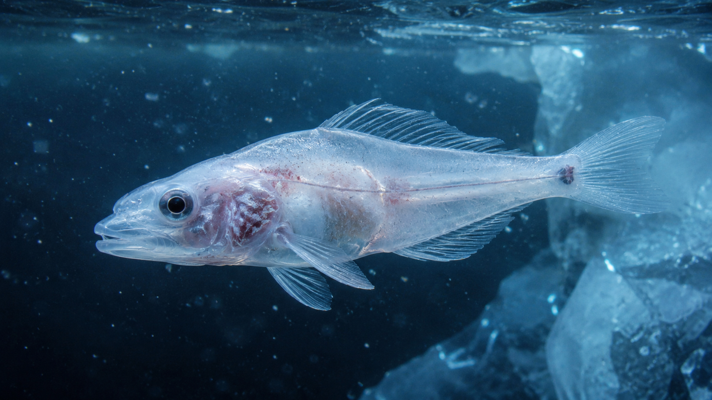

When most people picture blood, they picture the color red. That color comes largely from hemoglobin, an oxygen-binding protein found inside red blood cells. In humans and in most other vertebrates, hemoglobin is central to the transport of oxygen from respiratory organs to tissues.
Antarctica, however, is home to a remarkable exception.
Antarctic icefish, members of the family Channichthyidae, are the only known vertebrates whose adult blood completely lacks hemoglobin. They also lack mature red blood cells, giving their blood a pale and sometimes almost translucent appearance.
That raises an obvious question: if hemoglobin normally carries so much oxygen, how can these fish survive without it?
A Vertebrate That Abandoned Hemoglobin
The discovery of Antarctic fish without red blood cells was so surprising that it challenged a basic assumption about vertebrate physiology. In 1954, Norwegian zoologist Johan T. Ruud described the extraordinary blood characteristics of Antarctic icefish.
Decades of research have confirmed that the absence of hemoglobin is not simply a temporary condition. In the icefish lineage, the adult circulatory system functions without the conventional red-cell and hemoglobin system used by other vertebrates.
The difference is enormous. Research reviewed in the Journal of Experimental Biology found that oxygen in icefish blood is carried in physical solution in the plasma, and the oxygen-carrying capacity of their blood can be less than 10% of that of comparable red-blooded Antarctic fish.
That sounds like a biological disadvantage — and scientists have found that it comes with real physiological costs.

How Can It Survive Without Hemoglobin?
The answer is not that icefish somehow do not need oxygen. They absolutely do. Their cells still require oxygen for aerobic energy production, just as ours do.
The difference is how oxygen gets around the body.
Instead of relying on hemoglobin to bind oxygen and transport it efficiently inside red blood cells, icefish carry oxygen dissolved directly in their blood plasma.
This strategy is possible partly because of the physical properties of extremely cold water. Cold seawater can contain relatively high concentrations of dissolved oxygen, and Antarctic waters are also highly oxygenated. Their low metabolic demands help as well.
But the fish need much more than cold water to make the system work. Their cardiovascular systems have been extensively modified.
Icefish generally have very large hearts, high blood volumes and unusually wide blood vessels compared with related red-blooded Antarctic fish. These features allow a large quantity of low-oxygen-capacity blood to circulate through the body.
The result is a remarkable trade-off: the fish transports oxygen less efficiently per unit of blood, but compensates by moving much more blood through an unusually open cardiovascular system.
The Simple Explanation: A Delivery System With Fewer Trucks
Imagine a city that normally delivers oxygen using thousands of highly efficient trucks. Suddenly, the trucks disappear. The city can still receive supplies, but the delivery network has to change.
The icefish is doing something similar. It lost the biological equivalent of a major oxygen-transport system, then evolved a circulation system capable of moving much larger amounts of blood to compensate.
The Cost of Living Without Red Blood Cells
It would be tempting to describe the loss of hemoglobin as a brilliant evolutionary upgrade. Scientific evidence suggests a more complicated story.
Researchers have found that the loss of hemoglobin places additional demands on the circulatory system. Icefish must move large volumes of blood, and their cardiovascular systems operate under unusual conditions to maintain oxygen delivery.
A major review by Bruce Sidell and Kristin O'Brien concluded that the loss of hemoglobin does not appear to be an adaptive advantage by itself. Instead, the fish evolved extensive cardiovascular modifications that compensate for the consequences of losing this oxygen carrier.
This distinction matters. Evolution does not necessarily produce a perfectly designed organism. Sometimes a trait can be retained while natural selection favors other changes that reduce its disadvantages.
Their Hearts Are Built Differently
One of the most striking adaptations is the icefish heart.
Compared with similarly sized red-blooded Antarctic fish, icefish have much larger hearts and can circulate blood at very high flow rates. Their blood vessels also tend to have unusually large diameters, reducing resistance to blood flow.
Researchers have also documented changes in tissues and cells associated with oxygen delivery, including vascular and mitochondrial adaptations.
In simple terms, almost the entire transport system had to be redesigned around the absence of hemoglobin.
The fascinating part is that the solution is not concentrated in one organ. The heart, blood vessels, blood volume, metabolism and tissues all participate in the compensation.
How Did This Strange Trait Evolve?
Genetic research indicates that the ancestors of modern icefish possessed the machinery associated with hemoglobin, but the lineage subsequently lost functional hemoglobin genes.
Studies of icefish genomes have identified remnants of hemoglobin-related genetic sequences, providing clues about the evolutionary history of this unusual trait.
Scientists have proposed several possible explanations for why such an apparently costly change could persist. The extremely cold, oxygen-rich Antarctic environment reduces some of the disadvantages of low blood oxygen-carrying capacity. Other research has investigated whether ecological factors, including the availability of iron, may also have influenced the evolution of reduced or absent hemoglobin.
There is therefore no reason to turn the story into a simple claim that "evolution discovered a better kind of blood." The scientific picture is much more interesting: a lineage underwent a dramatic loss and subsequently evolved an intricate set of compensatory traits.
But Why Doesn't Their Blood Look Red?
Human blood looks red because hemoglobin absorbs and reflects light in a characteristic way. Without large numbers of hemoglobin-containing red blood cells, icefish blood lacks that strong red coloration.
This is why the fish are sometimes described as "white-blooded." The expression is useful, but it should not be interpreted literally as meaning their blood is opaque white.
Their blood can instead appear very pale or translucent because it contains plasma without the large concentration of hemoglobin normally found in vertebrate red blood cells.
A Natural Experiment in Evolution
Antarctic icefish are valuable to scientists because they provide a rare natural example of what happens when a biological system considered fundamental to vertebrate life disappears.
By studying these fish, researchers can examine oxygen transport, cardiovascular physiology, mitochondrial biology, blood composition and the ways organisms compensate for extreme environmental pressures.
Their story also reveals something important about evolution: there is rarely a single solution to a biological problem.
Humans depend on lungs, red blood cells and hemoglobin. An Antarctic icefish depends on a very different combination of environmental conditions and physiological adaptations.
And perhaps that is the strangest fact of all. The animal is not breaking the rules of biology. It is showing us just how many different ways life can work within them.
How we researched this article: Curiono reviewed scientific literature about Antarctic icefish physiology, hemoglobin loss and cardiovascular adaptation. Technical findings are explained here in simpler language for readers who may not have a scientific background.
Scientific References & Sources
- Sidell, B. D., & O'Brien, K. M. (2006). When bad things happen to good fish: the loss of hemoglobin and myoglobin expression in Antarctic icefishes. Journal of Experimental Biology, 209(10), 1791–1802. DOI
- di Prisco, G., Cocca, E., Parker, S., & Detrich, H. W. (2002). Tracking the evolutionary loss of hemoglobin expression by the white-blooded Antarctic icefishes. Gene, 295(2), 185–191. PubMed
- Cocca, E. et al. (1995). Research on hemoglobin gene loss and expression in Antarctic icefish. PubMed Central
- Verde, C. et al. (1998). Antarctic fish hemoglobins: Evidence for adaptive evolution at subzero temperature. Proceedings of the National Academy of Sciences. PubMed Central
- Genomic research and recent reviews on Antarctic notothenioid cold adaptation and hemoglobin evolution. PubMed Central
- Recent research on gene loss and physiological adaptation in Antarctic icefish. PubMed Central